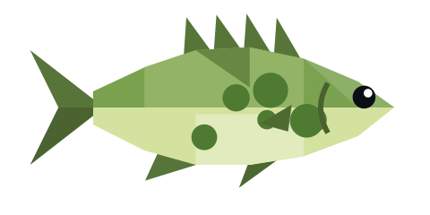
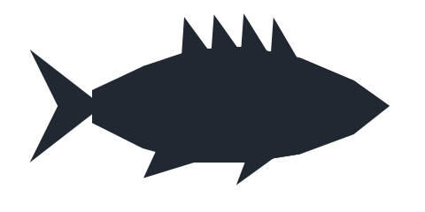
Wears the swamp like a sweater.
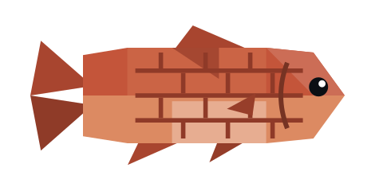
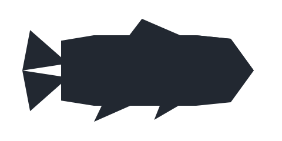
Square, sturdy, and slightly confused about whether it's a fish or a wall.
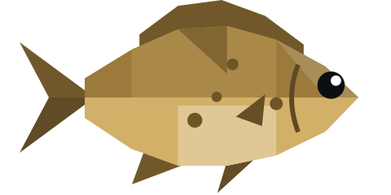
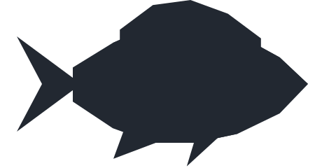
Unremarkable, and perfectly happy that way.
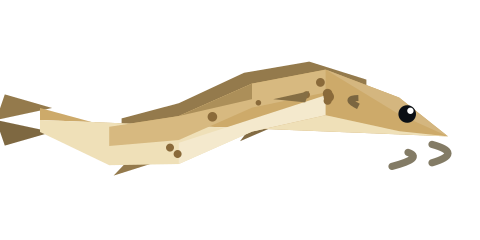
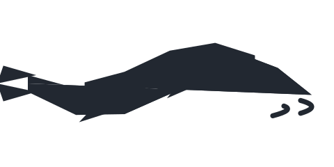
Wriggles through the silt between old cobbles.
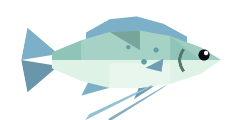
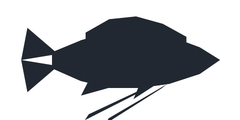
Drifts between the lily pads like it has nowhere to be.
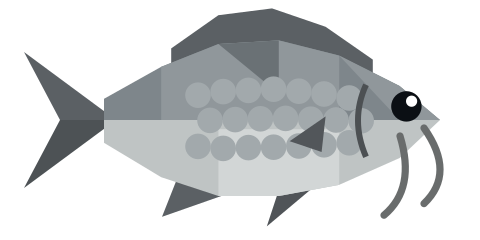
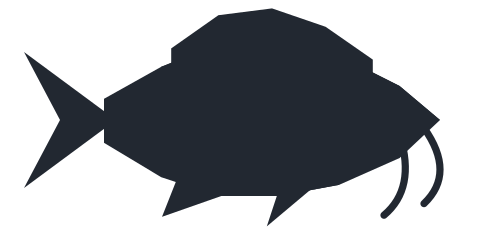
Grazes the old streets as if it still pays rent.
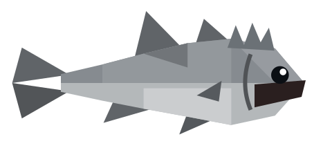
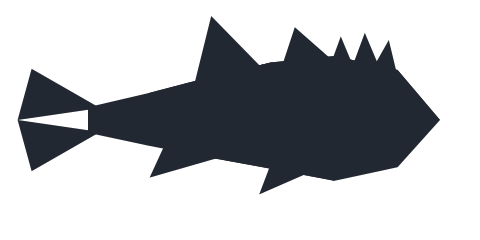
Sits on ledges pulling faces. Harmless.
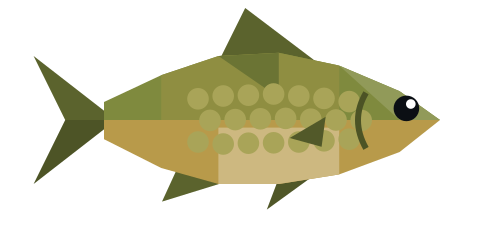
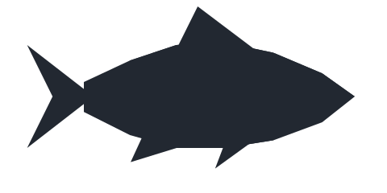
Looks like it swam off a fountain and never went back.
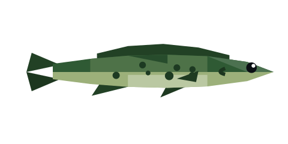
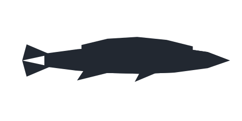
Hunts at night between the roots. Polite enough by day.
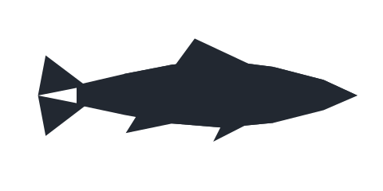
The swamp’s little lantern. Follows your lamp like it wants to talk.
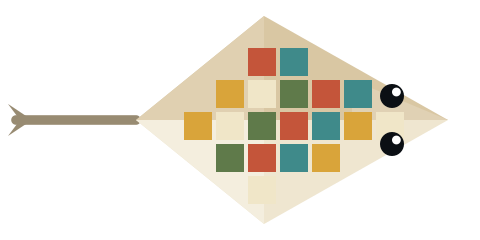
Its back is a mosaic. Nobody knows who laid it.
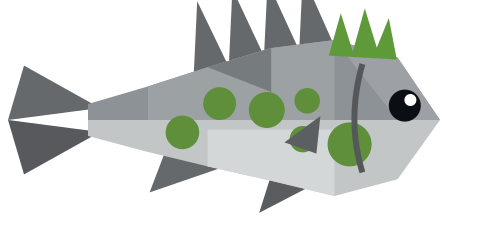
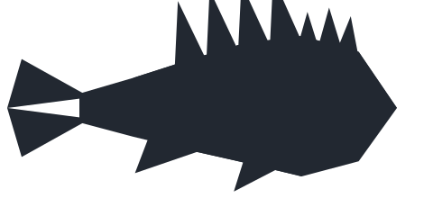
Stays so still by the fallen statue that people have tried to read the inscription on it.
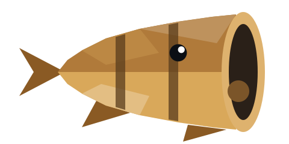
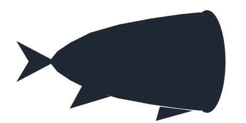
Comes up when something rings. Even a boat horn will do.
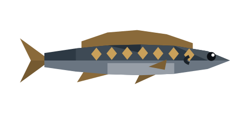
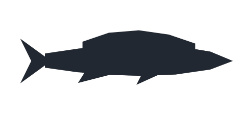
Lives inside the old hulls. Treats them like a house.
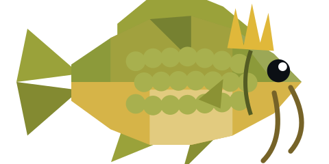
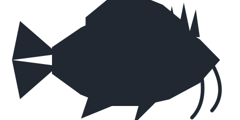
The city’s last ruler, some say. It still sits in the middle of the room.
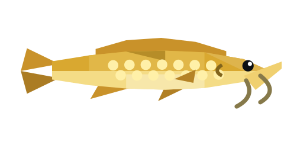
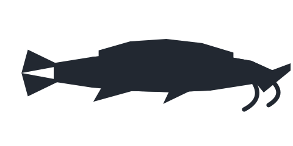
Swims up the temple steps at sunrise, as if it’s late for something.